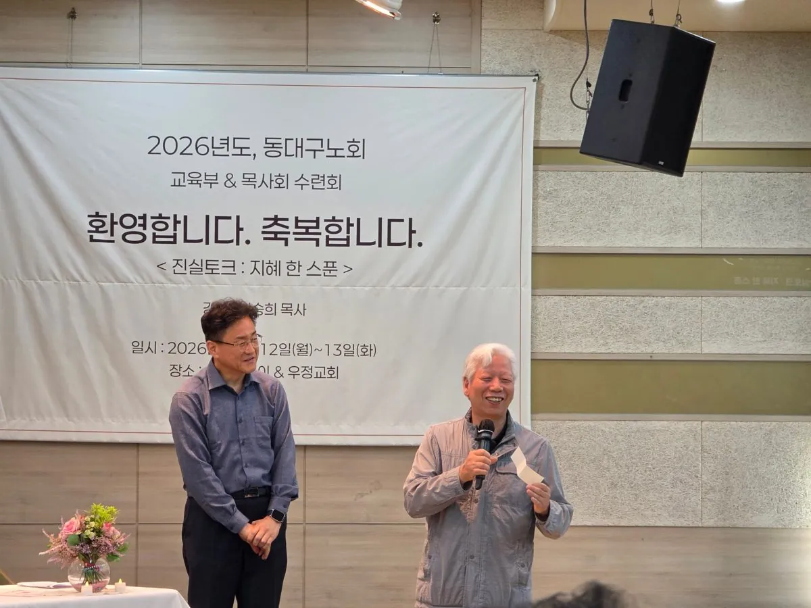
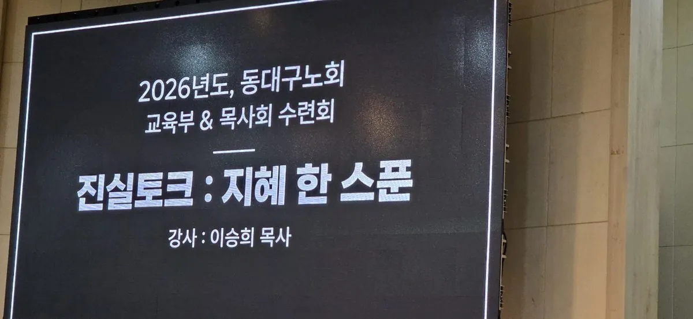
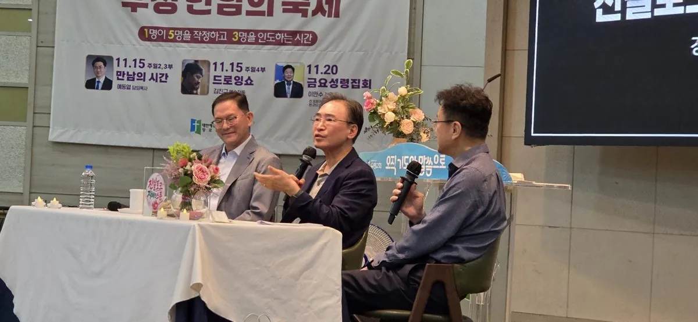

'지혜 한 스푼' 나눈 동대구노회 목사회·교육부 연합수련회, 울산서 개막
증경총회장 이승희 목사가 강사로 나서 설교와 '진실토크'를 진행… 웃음 가득한 분위기 속에 시찰별 탁구대회로 이어지는 1박 2일 일정
동대구노회(노회장 두인균 목사) 목사회와 교육부가 함께하는 '2026년도 연합수련회'가 12일(월) 울산 우정교회와 신라스테이울산에서 막을 올렸다. 이번 수련회는 13일(화)까지 이어지며, 증경총회장 이승희 목사(반야월교회)가 강사로 나서 말씀을 전하고 '진실토크: 지혜 한 스푼' 시간을 이끌었다.

울산에서 열린 1박 2일 연합수련회
이번 연합수련회는 '목사회 & 교육부'라는 이름으로 열렸으며, 동대구노회 목사회가 주관했다. 장소는 울산 우정교회와 신라스테이울산이다. 주최 측은 첫째 날 예배와 진실토크를 통해 노회 소속 목회자들이 말씀 안에서 마음을 모으고, 이튿날까지 교제를 이어가도록 프로그램을 짰다.
행사 안내에서 주최 측은 수련회를 허락하신 하나님께 영광을 돌리고, 강사 이승희 목사와 축도를 맡은 두인균 노회장에게 감사를 전했다. 원활한 진행에 협조한 각 시찰장과 서기들에게도 감사의 뜻을 밝혔다.
예배: "그도 이스라엘을 구원하였더라"
예배는 박영찬 목사(동산·목사회장)의 사회로 진행됐다. 말씀 본문은 사사기 3장 30~31절로, 에훗 이후 삼갈이 소 모는 막대기로 블레셋 사람 육백 명을 죽이고 이스라엘을 구원했다는 대목이다. 이승희 목사는 이 본문을 '그도 이스라엘을 구원하였더라'라는 제목으로 전했다.
| 순서 | 내용 | 담당 |
|---|---|---|
| 사회 | — | 박영찬 목사(동산·목사회장) |
| 찬양 | — | 김진석 목사(대영) |
| 사도신경 | — | 다같이 |
| 찬송 | 320장 '나의 죄를 정케 하사' | 다같이 |
| 기도 | — | 김남철 목사(은천·교육부장) |
| 성경 | 사사기 3:30-31 | 김종근 목사(성은·목사회계) |
| 설교 | "그도 이스라엘을 구원하였더라" | 이승희 목사(증경총회장) |
| 진실토크 | "지혜 한 스푼" | 이승희 목사(증경총회장) |
| 찬양 | — | 다같이 |
| 축도 | — | 두인균 목사(반야월서부·노회장) |

'진실토크: 지혜 한 스푼'… 웃음과 솔직함이 오간 시간
이날 가장 눈길을 끈 순서는 '진실토크'였다. 무대 위에는 마이크를 든 세 사람이 둘러앉아 대화를 이끌었고, 객석에서는 질문지가 추첨으로 뽑히는 방식으로 이야기가 이어졌다. 무대에는 이승희 목사를 중심으로 임대규 목사와 박영찬 목사가 함께 올라 대화를 이끌었다. 현장에서는 질문지가 뽑힌 참석자에게 5만 원(커피값)이 돌아간다는 소식에 웃음이 터졌다는 전언이다. 한승환 목사가 질문지에 뽑혀 5만 원에 당첨되며 박수를 받기도 했다.

행사를 지켜본 이들은 딱딱한 강의보다 분위기가 먼저 풀린 점을 높이 평가했다. 현장 참석자들은 "분위기가 좋아야 이런 진솔한 나눔이 가능하다"며 반겼고, 토크 중간중간 사회자와 패널이 던지는 재치 있는 한마디가 분위기를 한층 달궜다는 반응이 나왔다.
이승희 총회장님의 자전적 설교도 은혜가 되지만, 이런 진실토크도 정말 시원하고 좋습니다. — 현장 참석 목회자의 반응 (취재팀 정리)
이어지는 일정: 시찰별 탁구대회
수련회의 또 다른 볼거리는 시찰별 탁구대회다. 주최 측은 예배 후 각 시찰의 탁구 선수 2명과 응원단이 호텔 로비에 모일 것을 안내했다. 대회 장소는 울산 남구 신정로 20번길 2, 2층의 짱탁구장 울산달동점이다. 참석자들 사이에서는 벌써부터 대회에 대한 기대감이 높다.
협찬에 나선 교회들
이번 수련회 재정과 선물은 아래 교회·기관의 협찬으로 마련됐다. 주최 측은 숙소와 식사에 관한 문의는 목사회와 교육부 임원들에게 해 달라고 안내했다.
- 반야월교회 — 이승희 목사
- 동산교회 — 박영찬 목사
- 세계로교회 — 천점한 목사
- 은천교회 — 김남철 목사
- 반야월서부교회 — 두인균 목사
- 대신대학교 — 서영태 목사
남은 일정
수련회는 13일(화)까지 이어진다. 동대구노회 목사회와 교육부는 이번 연합수련회를 통해 말씀과 교제, 그리고 격의 없는 소통의 시간을 함께 누린다는 계획이다. 예장포커스는 이어지는 일정과 현장 소식을 계속 전할 예정이다.